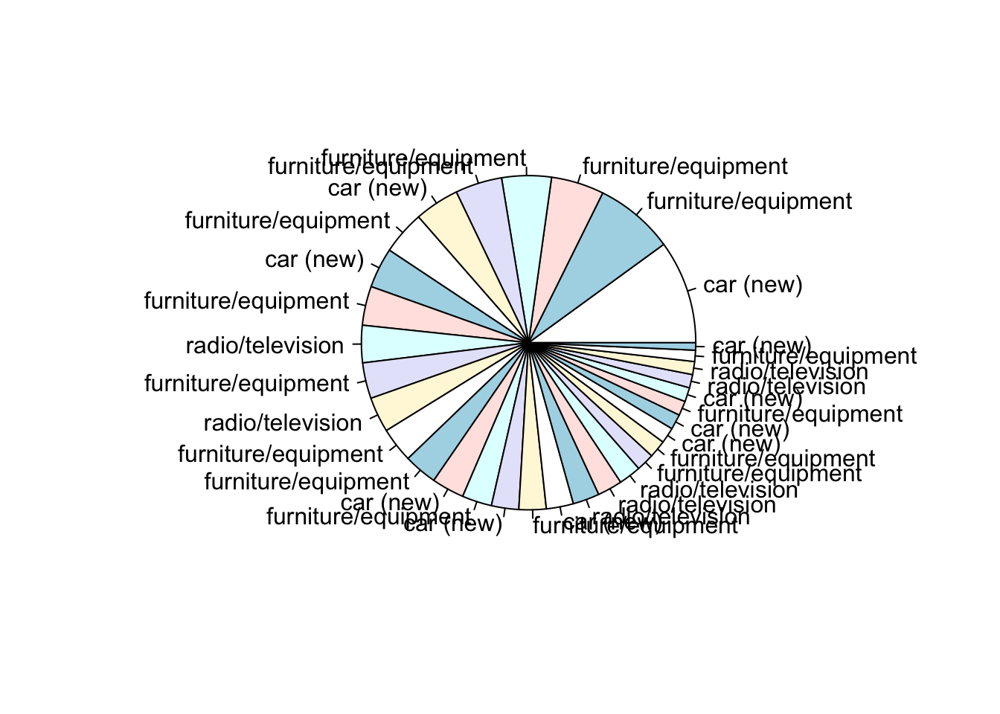
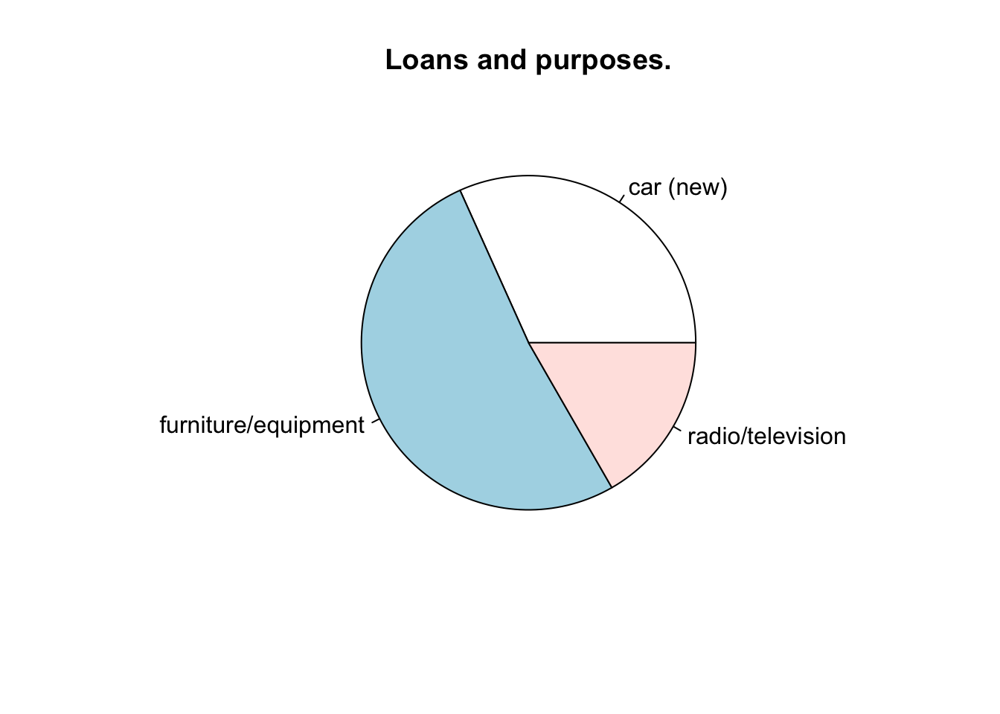

3 Using the dplyr package in R for data wrangling
3.1 Installing and loading the dplyr package
Installing the dplyr package:
install.packages('dplyr')Using the library() to open our package
library(dplyr)##
## Attaching package: 'dplyr'## The following objects are masked from 'package:stats':
##
## filter, lag## The following objects are masked from 'package:base':
##
## intersect, setdiff, setequal, union3.2 Creating subsets of a data frame with dplyr
Base R:
older_30 <- data[data$age_years >= 30,]
older_30 <- older_30[, c("age_years", "personal_status_sex", "credit_amount")]
older_30 <- older_30[sort(older_30$age_years),]dplyr:
older_30_2 <- data %>%
filter(age_years >= 30) %>%
select(age_years, personal_status_sex, credit_amount) %>%
arrange(age_years)
head(older_30_2)## # A tibble: 6 × 3
## age_years personal_status_sex credit_amount
## <dbl> <chr> <dbl>
## 1 30 male : single 5866
## 2 30 male : single 2333
## 3 30 male : single 5965
## 4 30 female : divorced/separated/married 8133
## 5 30 male : single 2249
## 6 30 female : divorced/separated/married 7721Examples:
- Only divorsed men
- Minimum age of 18
- Loans for:
"car (new)","radio/television"or"furniture/equipment": - Only select the following columns:
"age_years""duration_months""credit_amount""purpose""response"
- Sorted on
"credit_amount"from high to low (descending)
Let’s see how we can create this subset with using the dplyr functionality:
selected_purposes <- c("car (new)", "radio/television", "furniture/equipment")
subset_1 <- data %>%
select(age_years, duration_months, credit_amount, purpose, personal_status_sex, response) %>%
filter(personal_status_sex == "male : divorced/separated") %>%
filter(age_years >= 18) %>%
filter(purpose %in% selected_purposes) %>%
arrange(desc(credit_amount))Check out the subset:
subset_1## # A tibble: 32 × 6
## age_years duration_months credit_amount purpose personal_status_… response
## <dbl> <dbl> <dbl> <chr> <chr> <dbl>
## 1 45 14 8978 car (new) male : divorce… 1
## 2 55 24 6872 furniture… male : divorce… 1
## 3 32 30 4583 furniture… male : divorce… 0
## 4 40 18 4297 furniture… male : divorce… 1
## 5 43 24 4057 furniture… male : divorce… 1
## 6 37 24 3878 car (new) male : divorce… 0
## 7 35 18 3780 furniture… male : divorce… 0
## 8 44 20 3485 car (new) male : divorce… 0
## 9 44 6 3384 furniture… male : divorce… 1
## 10 26 24 3235 radio/tel… male : divorce… 0
## # … with 22 more rows3.3 Combining dplyr for creating visualisations for specific subsets
hist(subset_1$credit_amount, breaks = 30)pie(subset_1$credit_amount, labels = subset_1$purpose)
Now, let’s show a pie chart for our subset:
subset_1_grouped <- subset_1 %>%
group_by(purpose) %>%
summarize(total_amount = sum(credit_amount))pie(subset_1_grouped$total_amount, labels = subset_1_grouped$purpose, main = "Loans and purposes.")
Challenge:
We will try to create the following subset:
* Only women (divorced, married, single)
* All ages
* Only loans for "education", "retraining" "business", "other":
* Only the following columns:
* "age_years"
* "personal_status_sex"
* "credit_amount"
* "purpose"
* "response"
* Sorted on "age_years" descending
- Visualizing the proportion of women that paid back the loan (
"response").
selected_purposes <- c("education", "retraining", "business", "other")
subset_2 <- data %>%
filter(personal_status_sex == "female : divorced/separated/married") %>%
filter(purpose %in% selected_purposes) %>%
select(age_years, duration_months, credit_amount, purpose, response) %>%
arrange(desc(age_years))Check out our subset:
head(subset_2)## # A tibble: 6 × 5
## age_years duration_months credit_amount purpose response
## <dbl> <dbl> <dbl> <chr> <dbl>
## 1 67 9 1199 education 0
## 2 61 12 2012 education 0
## 3 59 48 6416 business 1
## 4 57 12 2748 education 0
## 5 56 6 1538 education 0
## 6 53 12 795 education 1barplot(table(subset_2$response))
3.4 Creating subsets and aggregations in dplyr
Challange: We want to create two bar charts, one for men and one for women, that show the avarage (mean) loan aount grouped by each different purpose:
men_woman <- data %>%
mutate(gender = ifelse(personal_status_sex != "female : divorced/separated/married", "man", "vrouw")) %>%
select(gender, purpose, credit_amount) %>%
group_by(gender, purpose) %>%
summarise(mean_amount = mean(credit_amount)) ## `summarise()` has grouped output by 'gender'. You can override using the `.groups` argument.men_woman## # A tibble: 20 × 3
## # Groups: gender [2]
## gender purpose mean_amount
## <chr> <chr> <dbl>
## 1 man business 4393.
## 2 man car (new) 3290.
## 3 man car (used) 5235.
## 4 man domestic appliances 1586.
## 5 man education 3899.
## 6 man furniture/equipment 3269.
## 7 man others 7061.
## 8 man radio/television 2526.
## 9 man repairs 2905.
## 10 man retraining 930
## 11 vrouw business 3195.
## 12 vrouw car (new) 2532.
## 13 vrouw car (used) 5814.
## 14 vrouw domestic appliances 1410.
## 15 vrouw education 2188.
## 16 vrouw furniture/equipment 2775.
## 17 vrouw others 11654.
## 18 vrouw radio/television 2401.
## 19 vrouw repairs 2126.
## 20 vrouw retraining 1758.men_set <- men_woman %>% filter(gender=="man")
women_set <- men_woman %>% filter(gender=="vrouw")
men_amounts <- men_set$mean_amount
names(men_amounts) <- men_set$purpose
women_amounts <- women_set$mean_amount
names(women_amounts) <- women_set$purposebarplot(men_amounts, las=2, col="blue")barplot(women_amounts, las=2, col="pink")